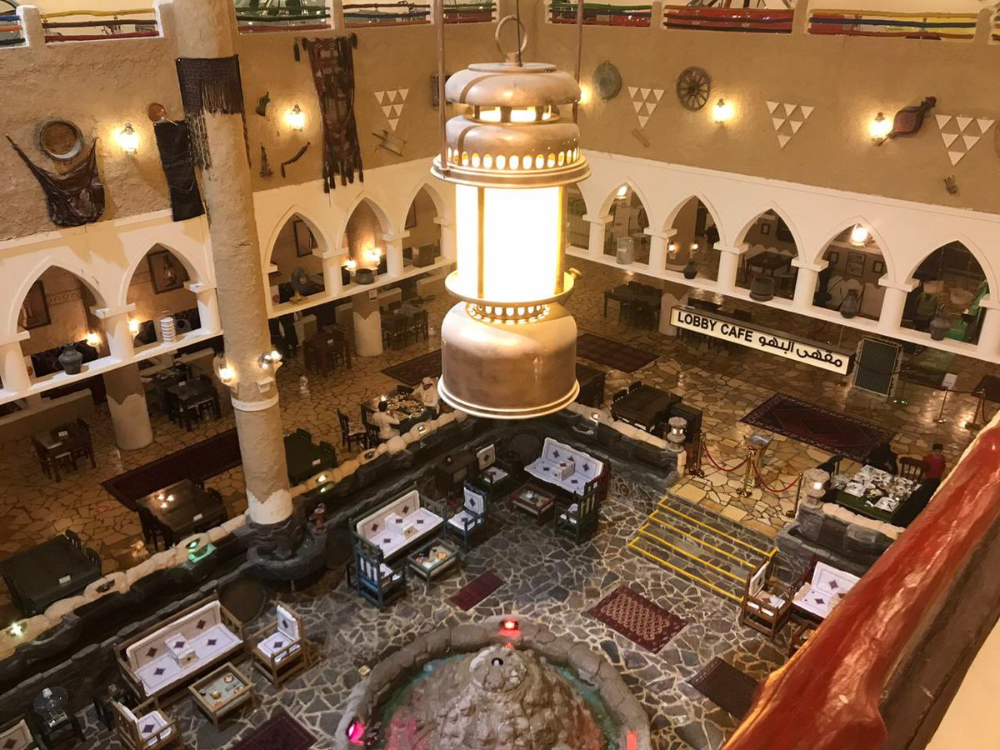

القرية الشعبية
تُعد القرية الشعبية الدمام تجسيد لتاريخ المملكة على أرض الواقع المُعاصر، حيث أنها أشهر المعالم التي تعرض المقتنيات الأثرية والمخطوطات واللوحات الأثرية التي تحكي التاريخ في أجمل مبنى تم تصميمه بشكل القلاع ليُحاكي الماضي العتيق، وتضم القرية مجموعة من الأنشطة التي يُمكنكم الاستمتاع بها من أول تناول الطعام في جلسات المطعم الشعبي، وحتى التجول بقاعات القرية ومشاهدة الأثريات الإسلامية وغيرها.